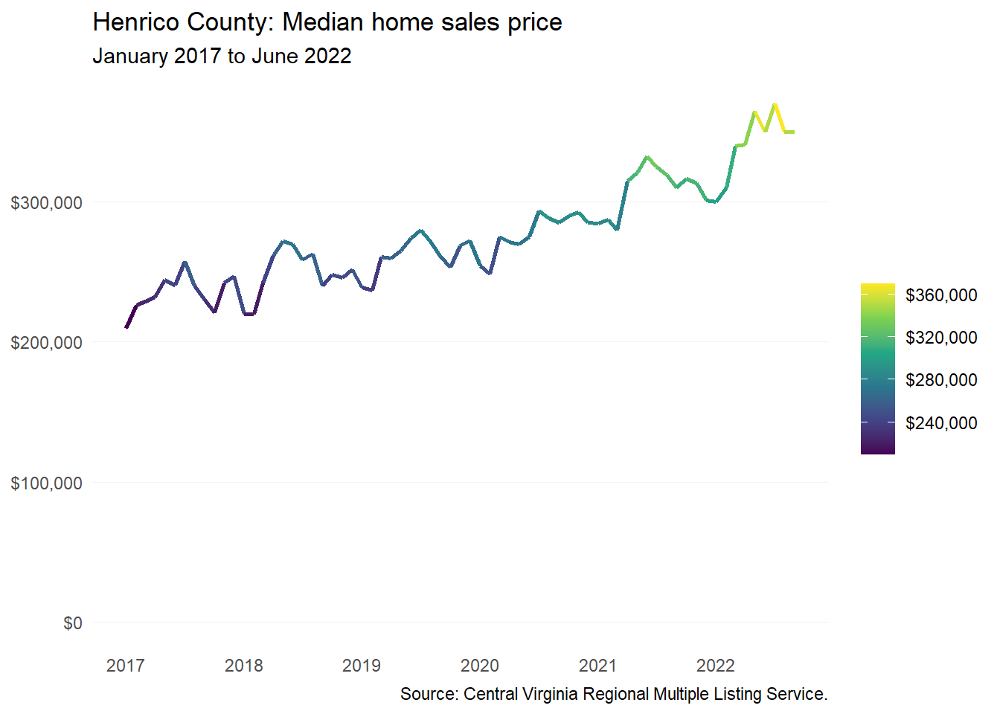
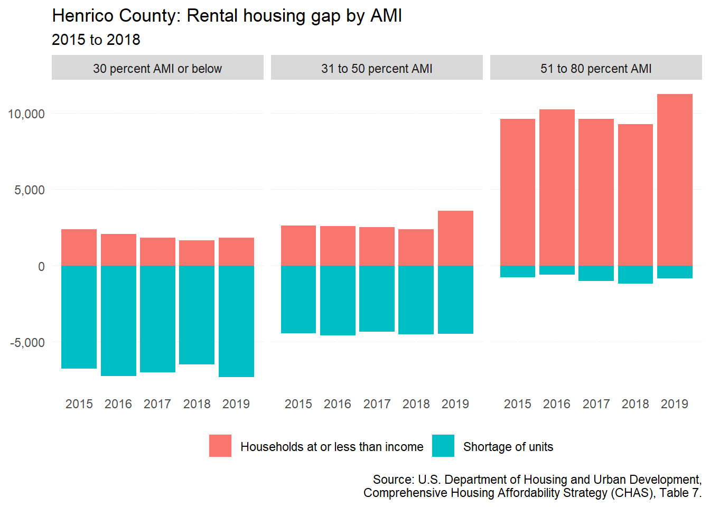
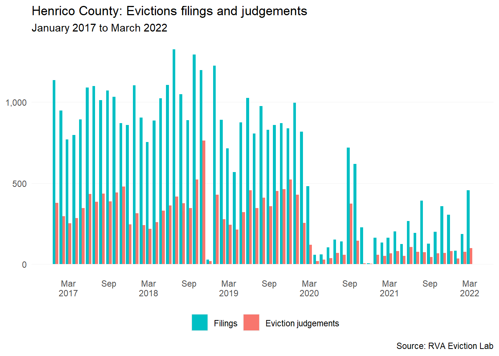

13 Henrico County
This chapter is a summary of the major changes to the Henrico County’s population and housing market in the past five years.
13.1 Takeaways
- Henrico County continues to grow — largely due to international migration and natural increase (+767 between 2020 and 2021), but the county have consistently seen population loss due to domestic out-migration (-1,552 during that same time period).
- In recent years, renter households with children have been in decline in the county (-1,010).
- Median home prices in the county have surpassed the $300,000 mark as of June 2022 — continuing to leave median renter households further unable to reach homeownership.
- In 2020, there was an over $12,000 difference in the income needed to afford the median home price and the typical renter income.
- There continue to be stark differences between rental markets in Eastern and Western Henrico — with Western Henrico commanding rents several hundred dollars higher.
- In 2018, there still remained a rental shortage of over 12,000 for households making less than 80 percent AMI.
13.2 Demographic and socioeconomic changes
13.2.1 Population changes
From 2010 to 2020, Henrico County has grown by 9 percent — an increase of 27,454 residents. The increase has been greater than Chesterfield County (8 percent), but slightly less than the City (11 percent).
Population increases in recent years have largely been the result of international migration and natural increases. But declines in the county have consistently been the result of residents moving elsewhere in the country. Domestic out-migration had been declining in the latter half of the 2010s, but between 2020 and 2021, 1,552 Henrico County residents moved elsewhere.
13.2.2 Household characteristics
Homeowner households of all types are increasing in the county — especially homeowners without children. Between 2016 and 2020, homeowner households without children saw an increase of 2,061, while homeowner households with children only increased by 1,469. Renter households have seen significantly smaller increases among households without children and nonfamily households (i.e. single adults living alone or with roommates). But Henrico County household decrease between 2016 and 2020 was solely experienced by renter households with children.
The Grey Wave continues in Henrico County, where there was a 6,603 increase in the senior population between 2016 and 2020. The majority of this growth was among seniors who were the head of family households (+2,821) and seniors living alone (+2,237).
13.2.3 Income and wages
The disparity between homeowner and renter incomes in the county has continued between 2016 and 2020. As of 2020, the median homeowner household income was nearing $100,000 at $93,965. But median renter household income was $48,081 — nearly $46,000 less than homeowners.
During this timeframe, the median homeowner household income increased by 7 percent, while renter income only increased by 3 percent.
13.2.4 Persons with disabilities
Henrico County has seen a net increase of 665 individuals with independent living difficulties between 2016 and 2020. Most of this growth (+350) has been among the early senior population (65 to 74 year age group), but the 35 to 64 year age range is also seeing major increases as well (+257).
13.3 Housing supply and market changes
13.3.1 Homeownership
The median home sales price has steadily been trending upward in Henrico County, and reached a high of $365,000 in May 2022. From 2017 to June 2022, the median home price in the county has increased by 67 percent.1

13.3.2 Rental
Based on CoStar multifamily market geographies, Henrico County consists of two distinct rental submarkets: Eastern and Western Henrico County.
As of Q3 2022, the average asking rent for Western Henrico ($1,327) was $302 greater than that of Eastern Henrico ($1,225). Regardless of these differences, both submarkets experienced significant increases in average asking rent since the start of the pandemic. Eastern Henrico had a 27 percent increase, while Western Henrico had a 30 percent increase in average asking rent.
This major rental increase was no doubt a result of tightening rental market amid pandemic eviction protections, as well as an increasing desire to leave denser urban environments during the height of COVID-19.
13.3.3 Housing assistance
Over the last two and a half years, more than 1,202 new affordable rental unit subsidies were added in the county. However, another 918 contracts expired (across four properties), leading to a net gain of just 284 dedicated affordable rental units.
| Subsidies | Properties affected | Units included | |
|---|---|---|---|
| Added | 12 | 10 | 1,202 |
| Removed | -4 | -4 | -918 |
| Net change | 8 | 6 | 284 |
| Sources: National Housing Preservation Database and Virginia Housing. |
13.3.4 Naturally-occurring affordable housing
As defined in this report, there are roughly 8,970 units of naturally-occurring affordable housing in Henrico County. These properties are spread out across 42 different buildings within the county. The majority of these properties are garden-style apartments — typical among NOAH properties.
NOAH properties built in the 1960s command slightly higher rents than those built in later decades. These 1960s NOAH properties are largely located in the highly desirable Tuckahoe area of Western Henrico. Pre-1960s NOAH properties are few and only account for three out of the 42 properties.
13.4 Gap analysis
13.4.1 Affordability of current housing stock
In 2020, the median renter income estimate required a rent of $1,202 to be considered affordable (not more than 30 percent of income). At this point in time, the average asking rent was $1,222 — only $20 more.
The difference between rent affordable to the typical renter and the average rent in the county has been narrowing since 2016 — when the difference was roughly $65.
Although it may seem as Henrico County is becoming more and more affordable to renters, it is increasingly the trend that more and more higher income households are choosing to rent out of necessity or lifestyle preference. As rents continue to rise and wage increases slow, we may soon see that average rents are greater than the median renter household income in Henrico.
Attaining homeownership has generally been harder with the median renter incomes. Before 2020, average renter incomes were not enough to afford the median-priced home in the county. As rates dropped in 2020, renters could compete more confidently in the market—but this is likely no longer the case as rates (and prices) have risen significantly.
The shortage of rental housing for households making 80 percent AMI and below has grown between 2015 and 2018 — from 12,030 in 2015 to 12,184 in 2018. This deficit increase by 154 rental homes was largely among rental housing between 31 to 80 percent AMI. However, below 30 percent AMI rental housing remains the largest need in the county.

13.4.2 Impact of housing costs
From 2015 to 2019, the number of cost burdened homeowners has been on a steady decline — an overall decrease of 2,442 cost burdened homeowners. For renters, there has been an overall increase in cost-burdened renters; a net increase of 700 cost-burdened renters since 2015, a significant gain from when the runing difference was only 163 in 2018.
Pre-pandemic eviction filings in Henrico County averaged 933 each month, but since the pandemic eviction filings have dropped to an average of 271 each month. Eviction protections throughout the pandemic led to a 74 percent decrease in the average eviction judgements — from 361 to 93 per month.
Compared to other localities in recent months, Henrico County eviction filings and judgements have remained low in recent months. But as eviction protections are lifted, Henrico County should be wary of any significant increases in filings.

Median home prices are currently reflected in nominal dollar values and therefore do not fully capture the real dollar change.↩︎